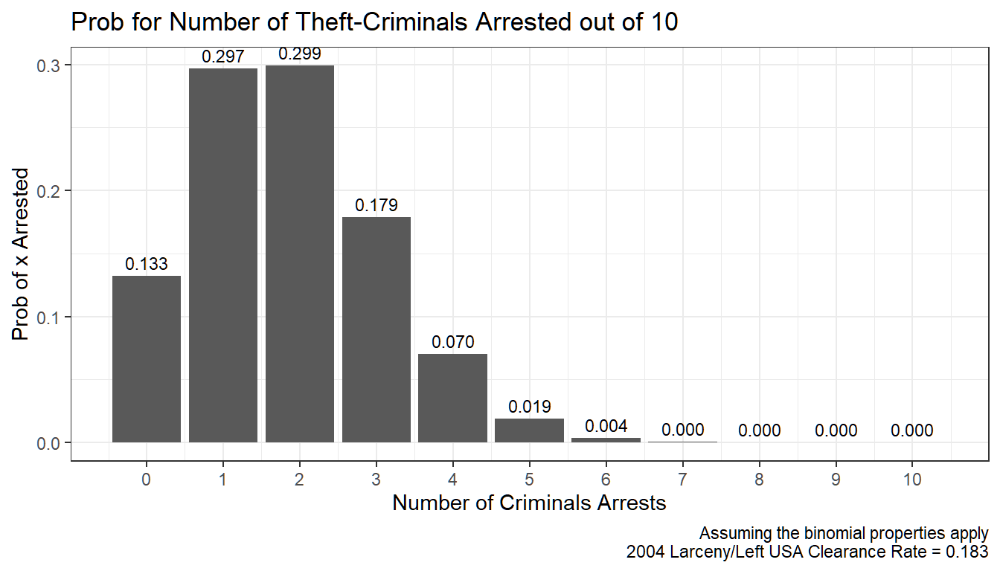
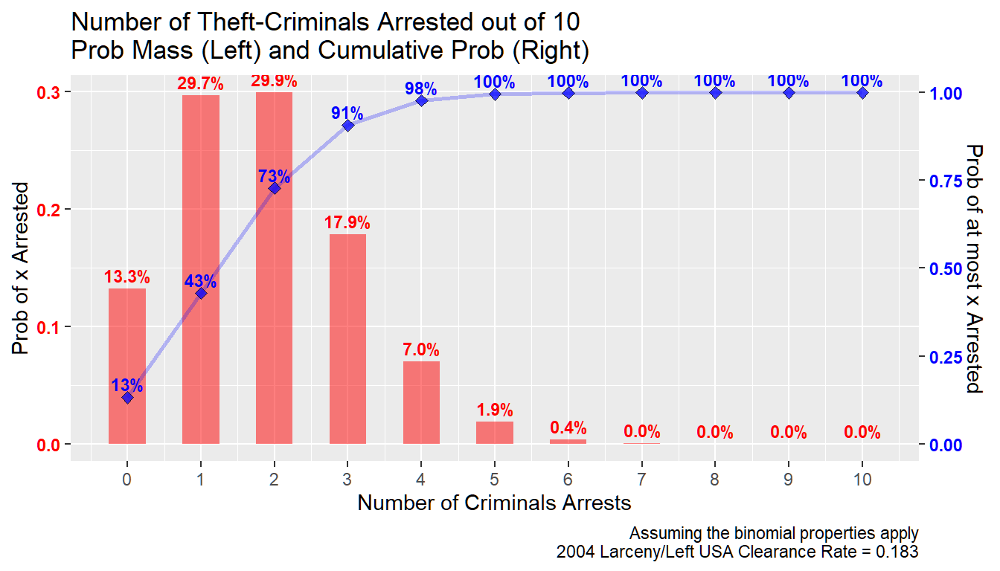
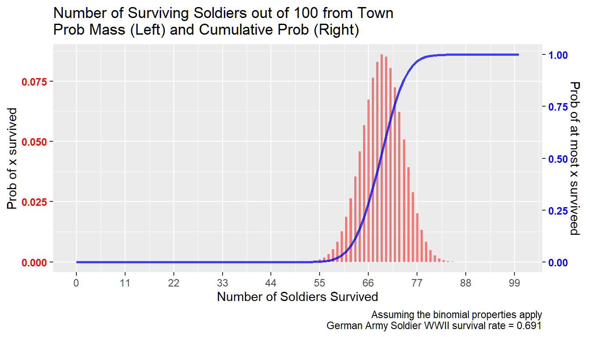
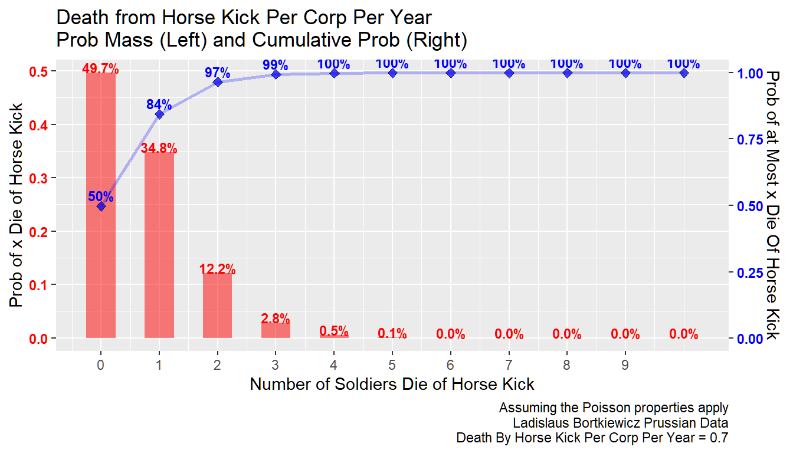

Chapter 5 Discrete Probability Distribution
5.1 Discrete Random Variable and Binomial
Go back to fan’s REconTools Package, R Code Examples Repository (bookdown site), or Intro Stats with R Repository (bookdown site).
We have been looking at various examples of discrete Random Variables in Sample Space, Experimental Outcomes, Events, Probabilities, Examples of Sample Space and Probabilities, Multiple-Step Experiment: Playing the Lottery Three times, and Throw an Unfair Four Sided Dice.
Now we state this a little bit more formally.
5.1.1 Discrete Random Variable
- Random Variable
- “A random variable is a numerical description of the outcome of an experiment.” (ASWCC P217) \[ \text{we could use letter } x \text{ to represent a random variable}\]
- Discrete Random Variables
- “A random variable that may assume either a finite number of values or an infinite sequence of values such as \(0,1,2,...\) is referred to as a discrete random variable.” (ASWCC P217)
- Discrete Probability Mass Function
- “For a discrete random variable \(x\), a probability function, denoted by \(f(x)\), provides the probability for each value of the random variable.” (ASWCC P220)
- We can think of different values of \(x\) as been mapped from an experimental outcome in the sample space. Probability can not be negative, and the sum of the probability of different possible \(x\) outcomes sum to 1 (ASWCC P221): \[ f(x) \ge 0\] \[\Sigma f(x) = 1\]
- Expected Value of a Discrete Random Variable (ASWCC P225) \[E(x) = \mu_x = \Sigma x \cdot f(x)\]
- Variance of a Discrete Random Variable (ASWCC P225) \[Var(x) = \sigma_x^2 = \Sigma \left( (x - \mu_x)^2 \cdot f(x) \right)\]
Well Known Discrete Probability Distributions
There is a variety of different Discrete Random Variable Probability Mass Functions that are appropriate for analyzing different situations. Think of these as tools, you don’t need to memorize the formulas, but you can learn about under what conditions these distributions are useful. Learn about the parameters of these distributions, and use the appropriate Excel or R function.
The simplest distribution is the Discrete Uniform Distribution. The uniform probability mass function is: \(f(x) = \frac{1}{n}\), where \(n\) is the the number of values the random variable may assume, corresponding to experimental outcomes. (ASWCC P222)
We focus on the Binomial Distribution here, a variety of other distributions are related to the binomial distribution:
5.2 Binomial Experiment
We have already examined Multiple-Step Experiment: Playing the Lottery Three times. Here we re-state the four properties of the Binomial Experiment (ASWCC P240):
- “The experiment consists of a sequence of \(n\) identical trials.”
- “Two outcomes are possible on each trial. We refer to one outcome as a success and the other outcome as a failure.”
- “The probability of a success, denoted by \(p\), does not change from trial to trial. Consequently, the probability of a failure, denoted by \(1-p\), does not change from trial to trial.”
- “The trials are independent.”
Binomial Sample Space
Note that given that there are \(n\) trials, the possible \(x\) go from \(x=0\) to \(x=n\). In another word, if there are three trials, \(n=3\), there are four possible experimental outcomes for \(x\).
- Experiment: The binomial experiment with \(n\) trials
- Experimental outcomes: \(x=0,x=1,...,x=\left(n-1\right),x=n\)
- Sample Space: \(S=\left\{0,1,...,n-1,n\right\}\)
Binomial Probability Mass Funcion
What is the probability of having \(x\) success out of \(n\) trials, given that there is \(p\) chance of success for each trial and the assumptions above? The answer is given by this formula, which is the binomial probability mass function: \[ f(x;n,p) = C^{n}_{x} \cdot p^x \cdot \left(1-p\right)^{n-x} = \frac{n!}{\left(n-x\right)! \cdot x!} \cdot p^x \cdot \left(1-p\right)^{n-x}\\ \]
With the binomial experiment, we can now use a formula to assign probabilities. A formula is a piece of machinery that takes inputs and spits out outputs, Thie binomial probability mass function has three inputs, \(x\), \(n\) and \(p\). You need to tell R, Excel, or alternative programs what these three numbers are, and the program will spit a probability out for you. \(n\) and \(p\) are the parameters.
Binomial Expected Value and Variance
For the binomial discrete random variable, it turns out the expected value and variance are: \[E(x) = n \cdot p\] \[Var(x) = n \cdot p \cdot (1-p)\] We can find the expected value and variance by summing over all terms following: \(E(x) = \mu_x = \Sigma x \cdot f(x)\) and \(Var(x) = \sigma_x^2 = \Sigma \left( (x - \mu_x)^2 \cdot f(x) \right)\), and we will always end up with these two results. It is intuitive. The average number of wins given that you play \(n\) trials and given that the chance of winning each game is \(p\) is \(n \cdot p\).
5.2.1 Binomial Example: Larceny
In 2004, in the United State, 18.3 percent of Larceny-Theft were cleared. “Clearance rates are used by various groups as a measure of crimes solved by the police.”
5.2.1.1 Chance of x out n Arrested
10 people commit 10 larceny-theft crimes, suppose the situation follows the conditions of the binomial experiment, what is the chance that nobody is arrested? The chance that 1, 2, 3, or all 10 are arrested?
- \(n=10\): 10 crimes, 10 trials
- \(p=0.183\): what is \(p\) here? For the police success is clearing a crime.
- \(x\): if \(x=10\), that means all larceny-thefts were cleared, if \(x=0\), this means the police failed to clear all 10 thefts.
For example, the chance that \(2\) out of \(10\) is arrested is: \[f\left(x=2;n=10,p=0.183\right) = \frac{10!}{\left(10-2\right)! \cdot 2!} \cdot 0.183^2 \cdot \left(1-0.183\right)^{10-2} = 0.299\]
We can use the r function, dbinom, to calculate these probabilites: dbinom(2,10,0.183). Additionally, pbinom(2,10,0.183) tells us the cumulative probability that at most 2 out of 10 are arrested.
We do this in the code below. From the graph below, we can see that there is a 13.3% chance that none of the 10 thieves would be arrested, and alomst 0 percent chance that all 10 of then would be arrested. The chance that 6 out of the 10 thiefs would be arrested is less than 1 percent.
# library
library(tidyverse)
# Parameters
n <- 10
p <- 0.183
# A vector of different arrest counts
zero2max <- 0:n
# Probability for different arrest counts
prob_of_arrests <- dbinom(zero2max, n, p)
# Control Graph Size
options(repr.plot.width = 5, repr.plot.height = 4)
# Number of Arrests Probabilities
arrest.prob.mass <- tibble(arrests=zero2max, prob=prob_of_arrests)
# Titles Strings etc
graph.title <- sprintf('Prob for Number of Theft-Criminals Arrested out of %s' ,n)
graph.caption <- sprintf(
paste0('Assuming the binomial properties apply\n',
'2004 Larceny/Left USA Clearance Rate = %s'), p)
# Create a Table and Graph it
arrest.graph <- arrest.prob.mass %>%
ggplot(aes(x=arrests, y=prob, label = sprintf('%0.3f', prob))) +
geom_bar(stat = 'identity') +
geom_text(vjust = -0.5, size = 3) +
labs(title = graph.title,
x = 'Number of Criminals Arrests',
y = 'Prob of x Arrested',
caption = graph.caption) +
scale_x_continuous(labels = zero2max, breaks = zero2max) +
theme_bw()
print(arrest.graph)
5.2.1.2 What is the Chance of Arrest at Least X out of N People
What is the chance that at most 3 out of the 10 thiefs are arrested? That includes the chance that no one is arrested, 1, 2, or 3 people are arrested:
\[ p\left(x \le 3;n=10,p=0.183\right) \\ =\Sigma_{x=0}^{3} \left( f\left(x;n=10,p=0.183\right) \right) \\ =\Sigma_{x=0}^3 \left( \frac{10!}{\left(10-x\right)! \cdot x!} \cdot 0.183^x \cdot \left(1-0.183\right)^{10-x} \right)\\ =0.133 + 0.297 + 0.299 + 0.179\\ =0.907\\ \]
Given the low clearance rate, there is a \(90\) percent chance that at most 3 out of 10 criminals are arrested.
We can graph this out. We will graph the previous graph again but overlay the cumulative probability on top.
# Cumulative Probability for different arrest counts, before dbinom, now pbinom
cumulative_prob_of_arrests <- pbinom(zero2max, n, p)
# Data File that Includes Cumulative Probability and Mass
arrest.prob <- tibble(arrests=(zero2max), prob=prob_of_arrests, cum.prob=cumulative_prob_of_arrests)
# Control Graph Size
options(repr.plot.width = 5, repr.plot.height = 4)
# Create a Table and Graph it
# geom_text(aes(y=prob, label = sprintf('%0.3f', prob)), vjust = -0.5, size = 3) +
axis.sec.ratio <- max(cumulative_prob_of_arrests)/max(prob_of_arrests)
right.axis.color <- 'blue'
left.axis.color <- 'red'
# Probabilities
arrest.graph <- arrest.prob %>%
ggplot(aes(x=arrests)) +
geom_bar(aes(y=prob),
stat='identity', alpha=0.5, width=0.5, fill=left.axis.color) +
geom_text(aes(y=prob,
label = paste0(sprintf('%2.1f', prob*100), '%')),
vjust = -0.5, size = 3, color=left.axis.color, fontface='bold')
# Cumulative Probabilities
arrest.graph <- arrest.graph +
geom_line(aes(y=cum.prob/axis.sec.ratio),
alpha=0.25, size=1, color=right.axis.color) +
geom_point(aes(y=cum.prob/axis.sec.ratio),
alpha=0.75, size=2, shape=23, fill=right.axis.color) +
geom_text(aes(y=cum.prob/axis.sec.ratio,
label = paste0(sprintf('%2.0f', cum.prob*100), '%')),
vjust = -0.5, size = 3, color=right.axis.color, fontface='bold')
# Titles Strings etc
graph.title <- sprintf(
paste0('Number of Theft-Criminals Arrested out of %s\n',
'Prob Mass (Left) and Cumulative Prob (Right)'), n)
graph.caption <- sprintf(
paste0('Assuming the binomial properties apply\n',
'2004 Larceny/Left USA Clearance Rate = %s'), p)
graph.title.x <- 'Number of Criminals Arrests'
graph.title.y.axisleft <- 'Prob of x Arrested'
graph.title.y.axisright <- 'Prob of at most x Arrested'
# Title
arrest.graph <- arrest.graph +
labs(title = graph.title,
x = graph.title.x, y = graph.title.y.axisleft,
caption = graph.caption) +
scale_y_continuous(sec.axis =
sec_axis(~.*axis.sec.ratio, name = graph.title.y.axisright)) +
scale_x_continuous(labels = zero2max, breaks = zero2max) +
theme(axis.text.y = element_text(face='bold'),
axis.text.y.right = element_text(color = right.axis.color),
axis.text.y.left = element_text(color = left.axis.color))
# Print
print(arrest.graph)
5.2.2 Binomial Example: WWII German Soldier
During WWII, 13.6 million Germans served in the German army, and 4.2 million were killed or missing. This is a death rate of 30.9 percent.
Suppose there are many German towns that each sent 100 soldiers to the front, suppose the binomial properties apply, what is the fraction of solidiers who will return to their towns after the war?
- \(n=100\): suppose 100 solidiers from each German town went to join the German Army during WWII.
- \(p=1-0.309=0.691\): \(p\) is the chance of survival.
- \(x\): if \(x=1\), that means 1 out of 100 survived.
# Parameters
n <- 100
p <- 1-0.309
# Generate Data
# A vector of different survival counts
zero2max <- 0:n
# Probability for different survival counts
prob_of_survives <- dbinom(zero2max, n, p)
# Cumulative Probability for different survival counts, before dbinom, now pbinom
cumulative_prob_of_survives <- pbinom(zero2max, n, p)
# Data File that Includes Cumulative Probability and Mass
survive.prob <- tibble(survives=(zero2max), prob=prob_of_survives, cum.prob=cumulative_prob_of_survives)5.2.2.1 WWII German Soldier–Graph
We can see the results graphically as well below. Note that the graph looks normal. This is indeed the case, when \(n\) gets larger, the bionomial distribution approximates the normal distribution, with mean \(n\cdot p\) and variance \(n \cdot p \cdot (1-p)\).
Again this is given binomial assumptions. Which means in this case that soldiers from each town has equal probability of dying. And the chance of one soldier from a town dying does not change the chance of other soldiers from the same town dying. These are unlikely to be correct assumptions, but maybe they are approximately right.
We can see from the figure below that if the survival distribution follows binomial, less than 1 percent of towns should expect more than 80 out of 100 soldiers to return. And less than 1 percent of towns should expect less than 57 soldiers to return. Hence:
- Given a 30.9 percent death rate, nearly all German towns will have between 57 to 80 soldiers returning from the war out the 100 they sent to join the German army.
# Control Graph Size
options(repr.plot.width = 5, repr.plot.height = 4)
# Two axis colors
axis.sec.ratio <- max(cumulative_prob_of_survives)/max(prob_of_survives)
right.axis.color <- 'blue'
left.axis.color <- 'red'
# Probabilities
survive.graph <- survive.prob %>%
ggplot(aes(x=survives)) +
geom_bar(aes(y=prob),
stat='identity', alpha=0.5, width=0.5, fill=left.axis.color)
# Cumulative Probabilities
survive.graph <- survive.graph +
geom_line(aes(y=cum.prob/axis.sec.ratio),
alpha=0.75, size=1, color=right.axis.color)
# Titles Strings etc
graph.title <- sprintf(
paste0('Number of Surviving Soldiers out of %s from Town\n',
'Prob Mass (Left) and Cumulative Prob (Right)') ,n)
graph.caption <- sprintf(
paste0('Assuming the binomial properties apply\n',
'German Army Soldier WWII survival rate = %s'), p)
graph.title.x <- 'Number of Soldiers Survived'
graph.title.y.axisleft <- 'Prob of x survived'
graph.title.y.axisright <- 'Prob of at most x surviveed'
# Titles etc
survive.graph <- survive.graph +
labs(title = graph.title,
x = graph.title.x,
y = graph.title.y.axisleft,
caption = graph.caption) +
scale_y_continuous(sec.axis =
sec_axis(~.*axis.sec.ratio, name = graph.title.y.axisright)) +
scale_x_continuous(labels = zero2max[floor(seq(1,n,length.out=10))],
breaks = zero2max[floor(seq(1,n,length.out=10))]) +
theme(axis.text.y = element_text(face='bold'),
axis.text.y.right = element_text(color = right.axis.color),
axis.text.y.left = element_text(color = left.axis.color))
# Print
print(survive.graph)
5.2.2.2 WWII German Soldier–Table
We can see from the table of results what is the distribution of the number of soldiers returning to each village in greater detail.
# print(survive.prob)
# start_idx <- 81
f_table <- function(start_idx) {
survive.subset <- round(survive.prob[seq(start_idx, start_idx+20),], 4)
survive.subset$prob <- paste0(survive.subset$prob*100,
'% chance EXACTLY (n=', survive.subset$survives, ') survived')
survive.subset$one.minus.cum.prob <- paste0((1-survive.subset$cum.prob)*100,
'% chance AT LEAST (n=', survive.subset$survives, ') survived')
survive.subset$cum.prob <- paste0(round((survive.subset$cum.prob)*100, 4),
'% chance AT MOST (n=', survive.subset$survives, ') survived')
return(survive.subset[,2:4])
}
lapply(c(1,21,41,61,81), f_table)## [[1]]
##
## [[2]]
##
## [[3]]
##
## [[4]]
##
## [[5]]5.3 Poisson Distribution
Go back to fan’s REconTools Package, R Code Examples Repository (bookdown site), or Intro Stats with R Repository (bookdown site).
We looked at the binomial probability distribution Discrete Random Variable and Binomial Experiment. Now we look at the poisson distribution.
Suppose you run a restaurant, maybe you know on average how many guests arrive on a weekday night between 6 and 9, but every night the exact number might be different, what is the distribution of guest arrivals? By chance, there could be \(0\) guests, there could also be a lot more guest than average potentially. We use the poisson distribution to think about these arrival probabilities.
For us to use the Poisson distribution, the experiment we study need to have these two properties (ASWCC P250):
- “The probability of an occurrence is the same for any two intervals of equal length.”
- “The occurrence or nonoccurrence in any interval is independent of the occurrence or nonoccurrence in any other interval.”
Poisson Sample Space
Guests arrive at your restaurant between 6 and 9 on a weekday night, 0 guest could arrive, 1, 2, 3, …, 10, 11, 13, … , 20, 21, 22, …. Unlike in the Binomial case, where we have a maximum number of games that we can win out of \(n\) games played, here we don’t impose a maximum number of guests that can arrive.
- Experiment: arrivals
- Experimental outcomes: \(x=0,x=1,...,...\), unlike the bionomial, there is no limit here
- Sample Space: \(S=\left\{0,1,...,...\right\}\) (the support is infinite)
Poisson Probability Mass Funcion
What is the probability of having \(x\) arrivals during an interval of time given that the expected (mean) number of arrival in that interval of time is \(\mu\)? The answer is given by this formula, which is the poisson probability mass function:
\[\begin{eqnarray} f(x;\mu) &=& \frac{\mu^{x} \cdot e^{-\mu}}{x!}\\ \end{eqnarray}\]
With the poisson experiment, we have this formula to assign probabilities. The formula has two inputs, \(x\) and \(\mu\). \(e=2.71828\) is not a parameter, it is a fixed number like \(\pi\), it is a mathematical constant. You need to tell R, Excel, or alternative programs what these two numbers \(x\) and \(\mu\) are, and the program will spit a probability out for you. \(\mu\) is the parameter.
Poisson Expected Value and Variance
For the Poisson discrete random variable, it turns out the expected value and variance are: \[E(x) = \mu\] \[Var(x) = \mu\]
We can check by summing over : \(E(x) = \mu_x = \Sigma x \cdot f(x)\) and \(Var(x) = \sigma_x^2 = \Sigma \left( (x - \mu_x)^2 \cdot f(x) \right)\), and we will always end up with these two results. Note that if we are actually adding up terms, since there is no maximum arrival limit, we have to approximate the summation up to a large number of arrivals.
5.3.1 Poisson Example: Horse-Kicking
Using data from the Prussian Army on “number of soldiers killed by being kicked by a horse each year in each of 14 cavalry corps over a 20-year period”, Ladislaus Bortkiewicz showed in 1898 in Gesetz der kleinen Zahlen (The Rule of Small Numbers) that this followed the Poisson distribution. This is one of the most famous examples of the Poisson Distribution.
He found that there was 0.70 deaths per one corps per one year.
Chance of 2 death per year per corp
- \(x=2\): 2 death in a corp in a year by horse-kick
- \(\mu=0.70\)
For example, the chance that \(2\) soldier from a corp in a year die of horse kick: \[f\left(x=2;\mu=0.7\right) = \frac{0.7^{2} \cdot e^{-0.7}}{2!} = 0.122\]
We can use the r function, dpois, to calculate these probabilites: dpois(2, 0.7). Additionally, ppois(2,0.7) calculates the cumulative probability that at most 2 die from horse-kick in a corp in a year.
Distributional Graphs Horse Kicking Death Per Corp Per Year
We can see from the results below that given our parameter \(\mu=0.7\), there is almost a 50 percent chance that a corp has no death from horse kick in a year. And the chances that 1, 2, 3 and 4 Prussian soldiers die from horse-kick are 35, 12, 3, and 0.5 percent.
The chance that at least 2 soldiers die from each corp each year is 16 percent.
If you are running the Prussian Army, you would want to know these statistics. You would want to track these statistics overtime and try to improve training etc.
library(tidyverse)
# Parameters
n <- 10
mu <- 0.70
# Generate Data
# A vector of different survival counts
zero2large <- 0:n
# Probability for different survival counts
prob_of_diekicks <- dpois(zero2large, mu)
# Cumulative Probability for different survival counts, before dbinom, now pbinom
cumulative_prob_of_diekicks <- ppois(zero2large, mu)
# Data File that Includes Cumulative Probability and Mass
diekick.prob <- tibble(diekicks=(zero2large), prob=prob_of_diekicks, cum.prob=cumulative_prob_of_diekicks)
# Control Graph Size
options(repr.plot.width = 5, repr.plot.height = 4)
# Two axis colors
axis.sec.ratio <- max(cumulative_prob_of_diekicks)/max(prob_of_diekicks)
right.axis.color <- 'blue'
left.axis.color <- 'red'
# Probabilities
diekick.graph <- diekick.prob %>%
ggplot(aes(x=diekicks)) +
geom_bar(aes(y=prob),
stat='identity', alpha=0.5, width=0.5, fill=left.axis.color) +
geom_text(aes(y=prob,
label = paste0(sprintf('%2.1f', prob*100), '%')),
vjust = -0., size = 3, color=left.axis.color, fontface='bold')
# Cumulative Probabilities
diekick.graph <- diekick.graph +
geom_line(aes(y=cum.prob/axis.sec.ratio),
alpha=0.25, size=1, color=right.axis.color) +
geom_point(aes(y=cum.prob/axis.sec.ratio),
alpha=0.75, size=2, shape=23, fill=right.axis.color) +
geom_text(aes(y=cum.prob/axis.sec.ratio,
label = paste0(sprintf('%2.0f', cum.prob*100), '%')),
vjust = -0.5, size = 3, color=right.axis.color, fontface='bold')
# Graph Strings
graph.title <- sprintf(
paste0('Death from Horse Kick Per Corp Per Year\n',
'Prob Mass (Left) and Cumulative Prob (Right)'))
graph.caption <- sprintf(
paste0('Assuming the Poisson properties apply\n',
'Ladislaus Bortkiewicz Prussian Data\n',
'Death By Horse Kick Per Corp Per Year = %s'), mu)
graph.title.x <- 'Number of Soldiers Die of Horse Kick'
graph.title.y.axisleft <- 'Prob of x Die of Horse Kick'
graph.title.y.axisright <- 'Prob of at Most x Die Of Horse Kick'
# Graphing
diekick.graph <- diekick.graph +
labs(title = graph.title,
x = graph.title.x,
y = graph.title.y.axisleft,
caption = graph.caption) +
scale_y_continuous(sec.axis =
sec_axis(~.*axis.sec.ratio,
name = graph.title.y.axisright)) +
scale_x_continuous(labels = zero2large[floor(seq(1,n,length.out=10))],
breaks = zero2large[floor(seq(1,n,length.out=10))]) +
theme(axis.text.y = element_text(face='bold'),
axis.text.y.right = element_text(color = right.axis.color),
axis.text.y.left = element_text(color = left.axis.color))
# Print
print(diekick.graph)